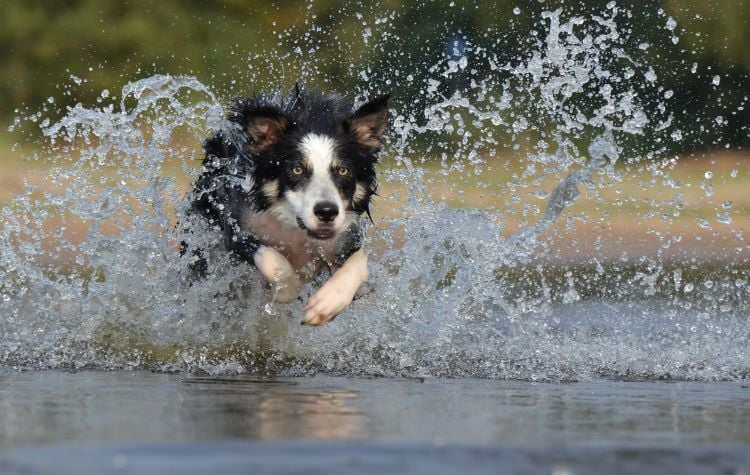

GitHub: @username
Favorite Tech: JavaScript
v class="member">GitHub: @PeterMKimani
Favorite Tech: JavaScript
Fun Fact: I love football.
I believe the animal that best describes me is the Border Collie. Border collies are known for their intelligence, energy, and sense of purpose — much like my own drive to understand complex systems and continuously learn. They are focused, reliable, and thrive when challenged, which reflects how I approach both academic and personal goals. Plus, just like a border collie, I enjoy staying active, being outdoors, and working as part of a team.
